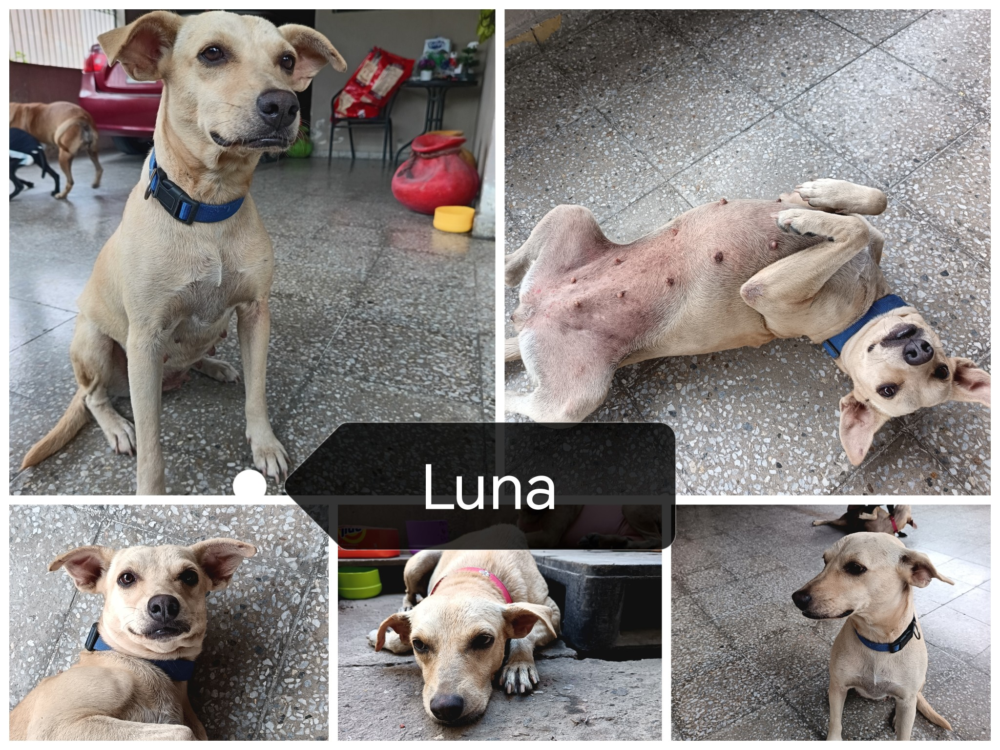

Luna
Me llamo Luna. Creci entre sombras de abandono y noches de frio bajo la lluvia. El hambre y la soledad marcaron mi camino, y por eso me cuesta confiar. Pero dentro de mí hay un corazón fuerte que solo desea un lugar al que llamar hogar.
Soy cuidadora y protectora, una guardiana silenciosa que sueña con alguien que me brinde cariño y calma. Me gusta descansar, pero sobre todo, quiero amanecer en un lugar sintiendome segura y amada.
Dame una oportunidad y descubrirás en mi una compañera fiel para toda la vida ¿Dejaras que Luna ilumine tu hogar?
Conocer opciones de apoyo